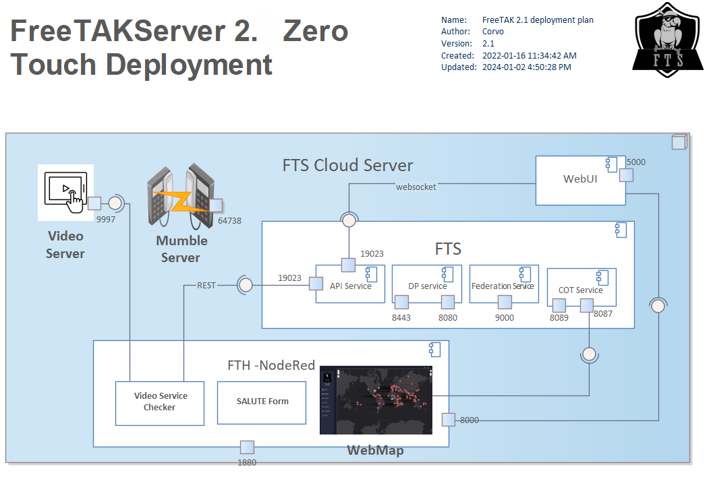

Free TAK Server : core

Components
The core consists of several logical components. They are all TCP ports, some encrypted via SSL and some in the clear.
Note:: The indicated ports are default values.
Application Programming Interface (API) Service
- REST instance (port 19023)
- websocket instance (port 19023)
Digital Py (DP) Service
- SSL instance (port 8443)
- Clear instance (port 8080)
Federation Service
- Clear instance (port 9000)
CoT Service
- SSL instance (port 8089)
- Clear instance (port 8087)
Reconfiguration
The ZeroTouch installer makes assumptions configuring the system.
There are corner cases which ZeroTouch will miss.
For example, ZTI acquires the IP address by, effectively using:
curl https://ifconfig.me/ip
ip addr
Verify and/or Edit the fts configuration file
/opt/fts/FTSConfig.yaml
Here is a fragment of that configuration file.
Addresses:
FTS_COT_PORT: 8087
FTS_SSLCOT_PORT: 8089
FTS_DP_ADDRESS: 127.0.0.1
FTS_USER_ADDRESS: 127.0.0.1
FTS_API_PORT: 19023
FTS_FED_PORT: 9000
FTS_API_ADDRESS: 127.0.0.1
FTS_DP_ADDRESS, FTS_USER_ADDRESS & FTS_API_ADDRESS
to reflect your IP (or ZeroTier IP) address.